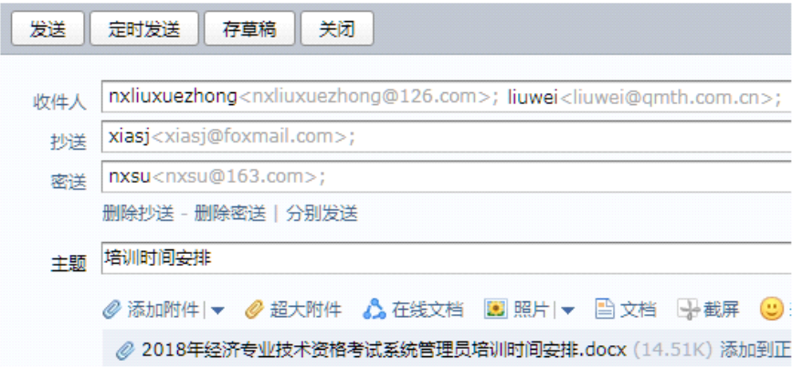

1.电子邮箱地址中的“@”符号用来分隔用户名和邮件服务器域名其中“@”符号右边的部分是用户名。
电子邮箱地址中“@”符号左边是用户名右边是邮件服务器域名如“example@mail.com”中“example”为用户名“mail.com”为邮件服务器域名。
2.编写电子邮件时在收信人地址栏中填写多个邮箱地址各邮箱地址之间使用“：”分割就可以将该邮件同时发送给多人。
编写电子邮件时在收信人地址栏填写多个邮箱地址一般用逗号（,）或分号（;）分割并非冒号（:）才能将邮件同时发给多人。
3.李文浩在QQ邮箱网站“https://mail.qq.com”上以用户名“liwenhao”注册电子邮箱注册成功后电子邮箱的地址是：liwenhao@mail.qq.com。
在QQ邮箱网站“https://mail.qq.com”以用户名“liwenhao”注册按照电子邮箱地址的构成规则即用户名@邮件服务器域名注册成功后的邮箱地址就是liwenhao@mail.qq.com。
4.如图所示的电子邮件发送界面接收此邮件的邮箱有2个。

邮件的收件人栏有2个邮箱地址抄送栏、密送栏各有1个邮箱地址；收件人、抄送、密送中的邮箱地址均能收到该邮件总计4个并非2个,因此该说法错误。
5.只能给和自己相同邮件服务器的邮箱地址发送电子邮件。
电子邮件系统设计上支持跨邮件服务器发送邮件。不同邮件服务器遵循统一的邮件传输协议如SMTP（简单邮件传输协议）用于发送邮件POP3或IMAP用于接收邮件。通过这些标准协议无论发件人和收件人的邮箱属于哪个邮件服务器只要网络连通且服务器配置正确都能实现邮件的正常发送与接收。例如使用QQ邮箱可以给Gmail邮箱发送邮件。
6.只有在同一个网站上注册的电子邮箱才能互相发送和接收邮件。
互联网中的邮件系统基于通用的邮件传输协议运行像SMTP简单邮件传输协议负责邮件发送POP3、IMAP负责邮件接收。无论电子邮箱在哪个网站注册只要这些网站的邮件服务器遵循这些标准协议就能实现相互间的邮件发送与接收。比如在网易注册的163邮箱能与腾讯的QQ邮箱互发邮件。
7.如图所示该电子邮箱中的未读邮件有20封。
从图中可以看出收件箱内有15封邮件未读。
8.不同邮件服务器之间不能相互发送电子邮件。
不同邮件服务器之间是能够相互发送电子邮件的。这得益于标准化的邮件传输协议如SMTP简单邮件传输协议。SMTP定义了邮件发送的规则和方式使得各个邮件服务器之间可以准确地传递邮件信息。当一封邮件从一个服务器发出它会依据收件人邮箱地址中的域名通过DNS域名系统查找对应的目标邮件服务器地址然后按照SMTP协议将邮件发送过去实现跨服务器的邮件传输。
9.编写邮件时为了使邮件能在预定的时间自动发送给对方可以使用邮箱的定时发送功能。
现在多数邮箱都具备定时发送功能。用户在编写邮件时设定好具体的发送时间邮箱系统就会在该时间将邮件自动发送出去。这方便了用户提前准备邮件并按照特定时间安排投递例如提前准备商务邮件在工作日上班时间准时发送无需用户在发送时刻亲自操作。
10.只要邮箱地址正确不同邮箱服务器之间的邮箱也可以相互发送电子邮件。如163邮箱的用户可以给QQ邮箱用户发送邮件。
互联网的邮件系统构建在通用协议基础上像SMTP用于发送邮件POP3和IMAP用于接收邮件。只要邮箱地址准确无误无论发件方与收件方隶属于不同的邮件服务器邮件都能正常传递。163邮箱和QQ邮箱的服务器均遵循这些标准协议所以163邮箱用户能顺利给QQ邮箱用户发送邮件。
11.可以将文件夹压缩后作为电子邮件附件发送。
大多数邮件客户端都支持以附件形式发送文件而将文件夹压缩成压缩包（如常见的.zip或.rar格式）后它就变成了一个文件从而能够作为电子邮件的附件进行发送。这样方便一次性传输多个文件或整个文件夹内容给收件人。
12.使用电子邮件发送附件时只要没有超过附件容量附件的数量没有限制。
虽然在使用电子邮件发送附件时通常会有附件总容量的限制但同时很多邮件系统也对附件的数量作出限制。这是出于服务器资源管理、传输效率以及安全性等多方面因素的考虑。例如部分邮件服务规定一次最多只能添加5-10个附件即使总容量未超限制超过规定数量也无法发送。
13.在不同的网站上申请电子邮箱必须使用不同的用户名。
不同网站的电子邮箱系统相互独立用户名的使用规则由各网站自行设定。所以在不同网站申请电子邮箱时允许使用相同的用户名。例如你可以在网易邮箱和腾讯邮箱都使用“user123”作为用户名来注册因为它们的用户信息数据库是分开管理的。
14.使用“定时发送”功能可以在设置的发送时间到达时提醒发件人发送电子邮件。
“定时发送”功能是指在用户设定的发送时间到达时邮箱系统自动将邮件发送出去而不是提醒发件人发送。用户提前撰写好邮件并设置定时发送到指定时间无需发件人手动操作邮件就会按设定被投递出去方便用户提前规划邮件发送时间。